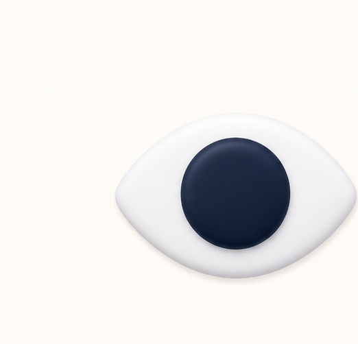
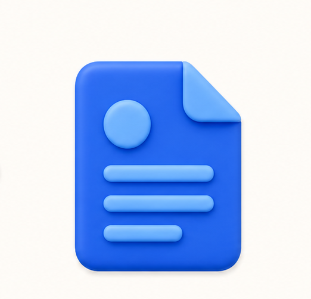

AI 模拟面试
1准备材料
2开始面试
3查看复盘
返回介绍页 ↗
AI 模拟面试
把正式面试，
先完整练一遍。
围绕你的真实经历完成一场面试，并在结束后看到具体复盘。
准备材料
开始一场完整模拟面试
上传这次面试要用的简历和岗位要求

必传
你的简历
支持 PDF、DOCX，最大 10MB
选传
岗位要求
没有 JD 也可以开始通用经历面试
预计 10–15 分钟 · 请按真实情况独立作答
镜头画面只在本地显示
摄像头待连接00:00
本次模拟面试复盘
等待生成 · 面试时长 00:00 · ✓ 已完成
等待复盘生成
等待复盘生成
等待复盘生成
能力维度
正在整理六项能力证据…
本次面试中的回答证据
你的回答
等待复盘生成面试官复盘
等待复盘生成
等待复盘生成
等待复盘生成
等待复盘生成
还差一份必需材料
请先上传你的简历
简历决定这场面试会围绕哪些经历来问。JD 可以稍后再补。进入面试前